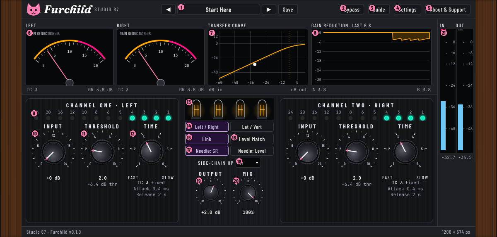
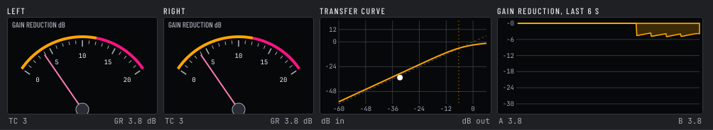
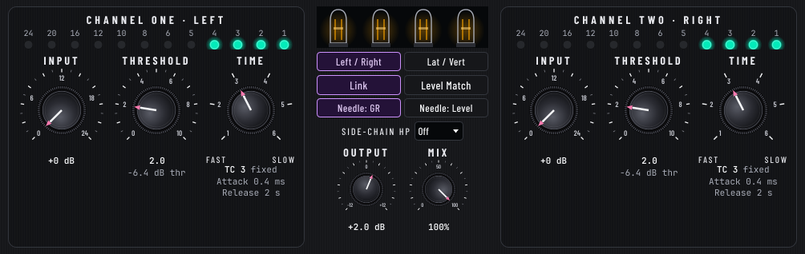

Furchild
Manual for version 0.1.0. Studio 87. Free and open source (AGPL-3.0-or-later). Collects nothing, never uses the network.
A cat-themed stereo tube-style limiting compressor in the class of the classic variable-mu hardware: our own DSP, written from public manuals and measured, not copied.
Quick start
- Put Furchild on a track. The first preset, Start Here, is Left / Right, Link on, Time 3.
- Raise Input and Threshold until the needles show 3 to 6 dB of gain reduction on the loud parts.
- Compare with Bypass (B). Switch on Level Match for a fair comparison, and off again when done.
- For parallel compression lower Mix. For a master, try Time 5 or 6 and Lat / Vert.
Signal flow
Input gain, then the variable-mu gain stage (steered by the side-chain, with its optional high-pass), the tube colour stage, a 10 Hz DC blocker, Output gain, Level Match, a soft ceiling, then Mix against the delayed dry signal. In Lat / Vert the sum and difference are compressed on their own and put back. Link makes channel one's Input, Threshold and Time rule both channels.
Interface tour



| # | Control | What it does | Range | Default |
|---|---|---|---|---|
| 1 | Preset bar | Arrows step through presets. The name opens the preset browser (search, type chips, load, export, edit, delete). Double-click the name to rename one of your own. Save stores the current settings as your own preset and asks before overwriting. A star after the name means the settings differ from the loaded preset. | 16 factory presets + yours | Start Here |
| 2 | Bypass | Bypass: hear the dry signal to compare with the processed sound (B). The meters keep moving. Switching is crossfaded over about 10 ms, no clicks. Shortcut B. | on / off | off |
| 3 | Guide | Short guide and keyboard shortcuts. | ||
| 4 | Settings | Info bubbles, power saving, colour look. Looks: C charcoal (default), A neon navy, B purple soda pop. | Look C, bubbles on | |
| 5 | About & Support | About Furchild, support and where your files live. Optional Ko-fi link. | ||
| 6 | Needle meters | Needle meter for the first channel. In Reduce view it shows how many dB the gain is turned down. In Level view it shows the output level in dB. | Reduce 0 to 20 dB; Level -30 to +3 dB | |
| 7 | Transfer curve | Input level (across) against output level (up). The bend is soft and gets steeper the harder you push, like a variable-mu tube stage. Amber is channel one, pink is channel two. The dashed line marks the threshold. The dot is the live signal. | -60 to +6 dB in, -60 to +18 dB out | |
| 8 | Gain reduction history | How much each channel turned the signal down, over the last six seconds. Amber is channel one, pink is channel two. | 0 to 30 dB, 6 s | |
| 9 | Channel one ladder | Gain reduction in dB for this channel. More lights, more turned down. Green up to 4 dB, yellow 5 to 8, orange 10 to 12, pink from 16. | 1 to 24 dB | |
| 10 | Input | Input sets how hard the signal hits the compressor, in 1 dB steps. More input means more gain reduction and more tube colour. | 0 to +24 dB | 0 dB |
| 11 | Threshold | Threshold is the level where the box starts turning things down. 0 catches only the loudest peaks, 10 catches quieter sound too. The row under the knob shows the level in dB (knob x -3.2 dB). | 0 to 10 (0 to -32 dB) | 2 |
| 12 | Time | Time selects one of six attack and release pairs. 1 to 4 are fixed (attack 0.2, 0.2, 0.4 and 0.8 ms; release 0.3, 0.8, 2 and 5 s). 5 and 6 are automatic: the release stretches when peaks keep coming (5: 2 to 10 s, 6: 0.3 to 25 s). | TC 1 to TC 6 | TC 3 |
| 13 | Tubes | Four valves. The glow follows the gain reduction of each channel: two for channel one, two for channel two. | ||
| 14 | Mode | Left / Right works on the two sides. Lat / Vert works on the middle (sum) and the sides (difference). Shortcut M. | Left / Right, Lat / Vert | Left / Right |
| 15 | Link | Link makes both channels turn down together, so the stereo picture does not lean to one side. Try: keep it on, turn it off only to set each channel separately. Shortcut L. Turning Link on copies channel one to channel two. | on / off | on |
| 16 | Level Match | Level Match keeps the processed sound as loud as the original so you judge the tone, not the volume. Try: switch it on, press Bypass (B) to compare, then switch it off. While on, the button shows the gain it applies. | on / off | off |
| 17 | Needle: GR / Level | Chooses what the two needle meters show. | GR, Level | GR |
| 18 | Side-chain HP | Side-chain HP stops deep bass from triggering the squeeze, so the low end stays full. The sound itself is not filtered. Try: 120 Hz on a mix with a big kick. | Off, 60, 120, 240 Hz | Off |
| 19 | Output | Output is the volume after the squeeze. It is the last gain stage before the Mix. | -12 to +12 dB | +2 dB |
| 20 | Mix | Mix blends the original with the squeezed sound. 100 is all squeezed. The dry path is delayed by the plugin latency so the blend stays in phase. | 0 to 100 % | 100 % |
| 21 | In and Out meters | Peak level, -60 to +6 dB. Blue up to -12, purple up to 0, pink above. The small block at the top marks a clip until you click it. The numbers under the strips are the highest peaks. | -60 to +6 dB |
Presets
16 factory presets are built in. Your own presets are plain text files you can back up or share:
- Linux:
~/.local/share/Studio 87/Furchild/presets - Windows:
%APPDATA%\Studio 87\Furchild\presets - macOS:
~/Library/Application Support/Studio 87/Furchild/presets
Export and Import use plain text you can paste anywhere. A preset does not change Bypass. The loaded preset name and the plugin settings (look, bubbles, power saving, needle view, window size) are saved with the project.
Keyboard and mouse
| B | Bypass on or off |
| M / L | Mode and Link |
| Knobs | Drag up or down, mouse wheel, arrow keys. Hold Shift for fine steps. Double-click to reset. |
| Window | Drag any edge or corner. It keeps its proportions. Double-click the wood to go back to 100%. |
Install and uninstall
See INSTALL.txt in the zip. The installers are not signed (signing costs money and this project is free), so Windows may show an "unknown publisher" screen (More info, Run anyway) and macOS may ask you to allow the package in System Settings, Privacy and Security. After installing, rescan plugins in your host.
Under the hood
Measured in the core test suite (plain C++, run on every build): the gain reduction follows the variable-mu law to 0.01 dB (ratio rising from about 1:1 to about 12:1 at +36 dB over threshold); attack and release times match the table; Level Match lands within 0.03 dB; the output begins to change within the reported latency of a knob move and reaches 90% of an Input step in about 25 ms (10 ms parameter smoothing); silence stays silent, DC is blocked, full scale square waves and NaN or infinity input stay finite and bounded; bypass and Mix 0 are the input bit for bit, delayed by the latency.
Latency: the tube stage and the soft ceiling run at 2x oversampling, which adds 16 samples at 44.1 and 48 kHz and 0 at 88.2 kHz and above. The plugin reports it to the host.
Aliasing, honestly: with 2x oversampling the tube stage at a 0.9 peak aliases at -76 dB (3 kHz) to -64 dB (15 kHz) relative to the tone; without it the same figures are -74 to -46 dB. The soft ceiling is only engaged when peaks come close to 0 dBFS; driven hard it aliases clearly (about -24 dB at 15 kHz and -47 dB at 3 kHz for a tone peaking at 1.3 before the ceiling). A 4x mode would improve that and is on the roadmap.
Our own choices (no public numbers exist): the shape and knee of the variable-mu law, the size of the tube colour term, the 0.1 s style averaging of Level Match, the ceiling curve, the three side-chain high-pass frequencies. Set by measurement, not yet tuned by ear on real material.
Not verified: behaviour in real hosts on Windows and macOS, the Flatpak extension in a real Flatpak DAW, and a listening comparison with the hardware it is inspired by.
Licence and thanks
AGPL-3.0-or-later. Built with JUCE (AGPLv3). Fonts: Barlow Condensed, JetBrains Mono and Fraunces, SIL Open Font Licence 1.1 (texts in assets/fonts). Source: github.com/SpeakingColors/Furchild. Optional support: ko-fi.com/studio87.
ClawShaper
Manual for version 0.1.0. Studio 87. Free and open source (AGPL-3.0-or-later). Collects nothing, never uses the network.
A multiband transient shaper with a safety limiter. It turns the punch (attack) and the tail (sustain) of your sound up or down, in up to four bands, and it reacts to changes in level, not to the absolute level.
Furchild
Manual for version 0.1.0. Studio 87. Free and open source (AGPL-3.0-or-later). Collects nothing, never uses the network.
A two-channel variable-mu style compressor: the harder the signal pushes, the more it turns down, with a soft knee, from almost 1:1 up to about 20:1. Six time constants (two of them automatic), Left / Right or Lat / Vert operation, a light valve-style colour and a side-chain high-pass.
Quick start
- Put Furchild on a track or bus. Pick a preset (for example Vocal Level or Mix Bus Glue) or start from Start Here.
- Raise Input one dB at a time until the needle moves 3 to 6 dB on the loud parts. More input means more gain reduction and more colour.
- Threshold sets where squeezing starts. Time sets speed: 1 is the fastest, 4 the slowest fixed one, 5 and 6 are automatic.
- Switch on Level Match, press Bypass (B) to compare, then switch it off again and set Output by ear.
The window

| Control | What it does | Range | Default |
|---|---|---|---|
| Preset arrows, name, Save | Open the preset browser. Double-click to rename your own preset. Save these settings as your own preset. Asks before overwriting. | 16 factory presets plus yours | Start Here |
| Bypass | Bypass: hear the dry signal to compare with the processed sound (B). The meters keep moving. | on or off | off |
| Guide, Settings, About | Short guide, info bubbles, power saving and colour look, about and where your files live. | ||
| Input (per channel) | Input sets how hard the signal hits the compressor, in 1 dB steps (0 to +24). More input means more gain reduction and more tube colour. Try: raise it 1 dB at a time until the needle moves 3 to 6 dB. | 0 to +24 dB, 1 dB steps | 0 dB |
| Threshold (per channel) | Threshold is the level where the box starts turning things down. At 0 only the loudest peaks are caught, higher numbers catch quieter sound too. Try: start at 2 and raise it until you see about 3 dB of gain reduction on the loud parts. | 0 to 10 (0 = -0 dB, 10 = -32 dB) | 2.0 (-6.4 dB) |
| Time (per channel) | Time sets how fast the box grabs a loud sound (attack) and how slowly it lets go (release). Left is FAST and punchy, right is SLOW and smooth. Try: 2 for vocals and drums, 5 or 6 for a whole mix. | 1 to 6 | 3 |
| Left / Right, Lat / Vert | Left / Right treats the left and right sides as two channels. Try: use this for most sources. Lat / Vert splits the sound into the middle (sum) and the sides (difference) and squeezes each on its own. Try: a master where the centre is too loud but the width is fine. | Left / Right | |
| Link | Link makes both channels turn down together, so the stereo picture does not lean to one side. Try: keep it on, turn it off only to set each channel separately. | on or off | on |
| Level Match | Level Match keeps the processed sound as loud as the original so you judge the tone, not the volume. Try: switch it on, press Bypass (B) to compare, then switch it off. | on or off | off |
| Needle: GR, Needle: Level | Needle shows gain reduction: how many dB the gain is turned down. Needle shows output level in dB. | GR | |
| Side-chain HP | Side-chain HP stops deep bass from triggering the squeeze, so the low end stays full. The sound itself is not filtered. Try: 120 Hz on a mix with a big kick. | Off, 60, 120, 240 Hz | Off |
| Output | Output is the volume after the squeeze, -12 to +12 dB. Try: raise it until the sound is as loud as before, so the compressor does not just sound louder. | -12 to +12 dB | +2 dB |
| Mix | Mix blends the original with the squeezed sound. 100 is all squeezed. Try: 40 to 50 on drums for punch with extra thickness. | 0 to 100 % | 100 % |
| Needle meters | Needle meter for the first channel. In Reduce view it shows how many dB the gain is turned down. In Level view it shows the output level in dB. | ||
| Transfer curve | Input level (across) against output level (up). The bend is soft and gets steeper the harder you push, like a variable-mu tube stage. Amber is channel one, pink is channel two. The dashed line marks the threshold. The dot is the live signal. | ||
| Gain reduction history | How much each channel turned the signal down, over the last six seconds. Amber is channel one, pink is channel two. | 6 seconds | |
| Valves | Four valves. The glow follows the gain reduction of each channel: two for channel one, two for channel two. | ||
| Gain reduction lights | Gain reduction in dB for this channel. More lights, more turned down. Numbers are dB. | 1 to 24 dB | |
| In and Out meters | Input level in dB, before the plugin. The small block at the top lights at 0 dB and stays lit. Click the meter to clear it. | -60 to +6 dB |
How it works
- The gain reduction follows a soft curve: the ratio rises with level, about 1:1 near the threshold and about 20:1 when pushed hard. The knee is 5 dB wide.
- Attack and release come from six pairs. Pairs 5 and 6 are program dependent: release stretches (2 to 10 s, or 0.3 to 25 s) when peaks keep coming.
- Lat / Vert turns the stereo signal into middle (sum) and sides (difference), squeezes each on its own and turns it back. Link makes both channels follow the louder one.
- A gentle valve-style saturation adds a little colour after the gain stage; a DC blocker and a soft clip above 0.9 keep the output safe.
- No latency: nothing is looked ahead. Mix 100 % is the compressed sound, 0 % the dry input.
The gain law, time constants and colour are our own design; they are not copied from any commercial product.
Keyboard and mouse
| B | Bypass on or off |
| [ ] | Previous and next preset |
| Knobs | Drag up or down, mouse wheel. Hold Shift for fine steps. Double-click to reset. |
| In and Out meters | Click to clear the clip light. |
| Window | Drag a corner; it keeps its proportions. Double-click the wood to return to 100%. |
| Presets | Save stores your own preset in your user data folder (Studio 87/Furchild/presets). Double-click the preset name to rename your own preset. Presets only ever live on your computer. |
Install and uninstall
- Linux: unpack the zip, run
install.sh(copies the VST3 to~/.vst3).uninstall.shremoves it. - Windows: run the installer. It adds an uninstaller. Close your DAW first.
- macOS: open the package. The build is not notarised, so macOS may ask you to allow it in System Settings, Privacy and Security.
After installing, rescan plugins in your host.
Licence and thanks
AGPL-3.0-or-later. Built with JUCE (AGPLv3). Fonts: Barlow Condensed and JetBrains Mono (SIL Open Font Licence 1.1), Liberation Serif (SIL Open Font Licence 1.1). Source: github.com/SpeakingColors/Furchild.
>>>>>>> ffce006 (Furchild plugin: engine, native window, presets, manual, installers, workflows (work in progress, first build pending))